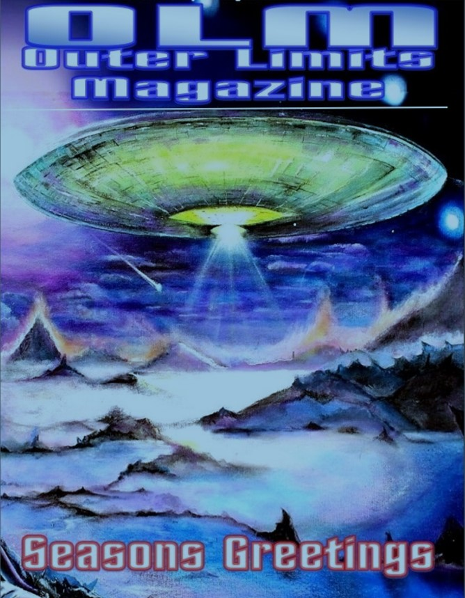

Description Περιγραφή
In August 1982, a British serviceman stationed at RAF Akrotiri — identified in the account by the pseudonym "Don Martin" — witnessed a large unidentified object hovering over the communications base. The sighting occurred at approximately 3:30 a.m. and was preceded by a commotion and the sound of sirens across the base.
Akrotiri at the time housed three listening stations inside distinctive white golf-ball-shaped facilities known as radomes. Several personnel, including Don and his comrades, observed a silvery-blue, elongated "donut"-shaped vehicle hovering over the radomes. It had visible windows and appeared to be surrounded by a misty atmosphere, glowing softly. The object was completely silent. Witnesses estimated its size as slightly longer than a Boeing 747.
Multiple personnel took flash photographs of the object. The following day a man and a woman arrived at the base and confiscated all photographs.
The account is corroborated by a separate report in Richard Dolan's book The Cover-Up Exposed 1973–1991. According to that version, forwarded to Dolan by Nick Redfern, on 16 August 1981 (thirteen months earlier than Don's estimate) the British Ministry of Defence ordered all aircraft operating from Akrotiri to stand down. Shortly afterwards, a "vast" object was tracked at 30,000 feet traveling at 900 mph. The object came to a halt over the base for 45 minutes. Witnesses described it as a white triangle over 700 feet long.
RAF Akrotiri was, during this period, the site of a powerful shortwave numbers station — the "Lincolnshire Poacher" — used by the Secret Intelligence Service (MI6) to transmit instructions to undercover agents. Antennas at the base also tracked surveillance satellites and U-2 aircraft on intelligence-gathering flights.
Τον Αύγουστο του 1982, Βρετανός στρατιωτικός σταθμευμένος στο RAF Ακρωτηρίου — που ταυτοποιείται στην αφήγηση με το ψευδώνυμο "Don Martin" — υπήρξε μάρτυρας ενός μεγάλου άγνωστου αντικειμένου που αιωρούνταν πάνω από τις εγκαταστάσεις επικοινωνιών. Η παρατήρηση σημειώθηκε περίπου στις 3:30 π.μ. και προηγήθηκε αναταραχή και ήχος σειρήνων στη βάση.
Το Ακρωτήρι εκείνη την εποχή φιλοξενούσε τρεις σταθμούς ακρόασης μέσα σε χαρακτηριστικές λευκές σφαιρικές εγκαταστάσεις γνωστές ως ραντόμε. Αρκετοί στρατιωτικοί, μαζί με τον Don και τους συντρόφους του, παρατήρησαν ένα ασημί-μπλε, επιμήκες όχημα σε σχήμα ντόνατ να αιωρείται πάνω από τα ραντόμε. Είχε ορατά παράθυρα και φαινόταν να περιβάλλεται από μια ομιχλώδη ατμόσφαιρα, λάμποντας απαλά. Το αντικείμενο ήταν απολύτως αθόρυβο. Οι μάρτυρες υπολόγισαν το μέγεθός του ως ελαφρώς μεγαλύτερο από ένα Boeing 747.
Αρκετοί στρατιωτικοί τράβηξαν φωτογραφίες με φλας του αντικειμένου. Την επόμενη ημέρα ένας άνδρας και μια γυναίκα έφτασαν στη βάση και κατέσχεσαν όλες τις φωτογραφίες.
Η αφήγηση επιβεβαιώνεται από ξεχωριστή αναφορά στο βιβλίο του Richard Dolan The Cover-Up Exposed 1973–1991. Σύμφωνα με εκείνη την εκδοχή, που διαβιβάστηκε στον Dolan από τον Nick Redfern, στις 16 Αυγούστου 1981 (δεκατρείς μήνες νωρίτερα από την εκτίμηση του Don) το Βρετανικό Υπουργείο Άμυνας έδωσε εντολή σε όλα τα αεροσκάφη που επιχειρούσαν από το Ακρωτήρι να μείνουν στο έδαφος. Λίγο αργότερα, ένα "τεράστιο" αντικείμενο εντοπίστηκε στα 30.000 πόδια να κινείται με 900 μίλια την ώρα. Το αντικείμενο σταμάτησε πάνω από τη βάση για 45 λεπτά. Οι μάρτυρες το περιέγραψαν ως ένα λευκό τρίγωνο μήκους άνω των 700 ποδών.
Το RAF Ακρωτηρίου ήταν, κατά την περίοδο αυτή, ο τόπος ενός ισχυρού σταθμού αριθμών βραχέων κυμάτων — του "Lincolnshire Poacher" — που χρησιμοποιούνταν από τη Μυστική Υπηρεσία Πληροφοριών (MI6) για τη μετάδοση οδηγιών σε μυστικούς πράκτορες. Κεραίες στη βάση παρακολουθούσαν επίσης κατασκοπευτικούς δορυφόρους και αεροσκάφη U-2 σε πτήσεις συλλογής πληροφοριών.
Source Material Πηγαίο Υλικό

Primary source: Robert Spearing, "The Curious Case of the Gosport Fisherman", Outer Limits Magazine, December 2020, pp. 68–71. Reprinted with kind permission of the author. Κύρια πηγή: Robert Spearing, «The Curious Case of the Gosport Fisherman», Outer Limits Magazine, Δεκέμβριος 2020, σσ. 68–71. Ανατυπώνεται με την ευγενική άδεια του συγγραφέα.
Notes Σημειώσεις
The British Government has no equivalent of the American Freedom of Information Act, and the events at Akrotiri remain officially unacknowledged. If you served at RAF Akrotiri during this period or hold related documentation, please contact us via the Report a UAP form. Η Βρετανική Κυβέρνηση δεν έχει αντίστοιχο του Αμερικανικού Νόμου περί Ελευθερίας της Πληροφορίας, και τα γεγονότα στο Ακρωτήρι παραμένουν ανεπίσημα αναγνωρισμένα. Εάν υπηρετήσατε στο RAF Ακρωτηρίου κατά την περίοδο αυτή ή διαθέτετε σχετική τεκμηρίωση, παρακαλούμε επικοινωνήστε μαζί μας μέσω της φόρμας Αναφέρετε UAP.